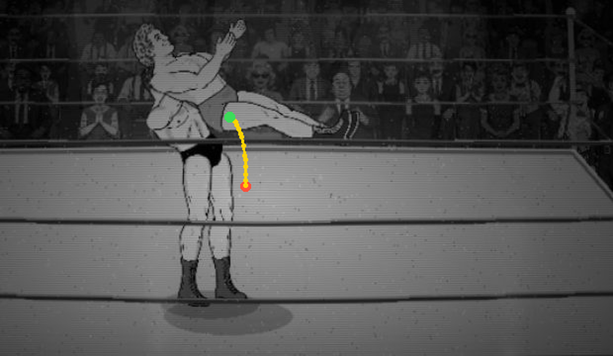
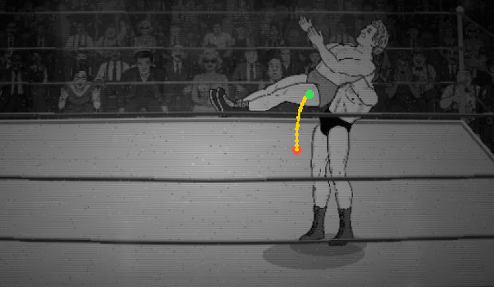

For Derek to judge. Normal-speed loops from the tie-up. Misses first. Earlier: r3, r2, first page.
Misses
Height is short: the defender's pelvis tops out 43.7 px over the attacker's pelvis (r2: 58, r3: 59); 68.5 px over the mat. The carry only gives the rise from the squat, the knees and the lean (the defender's own lift track is 0 through it). I deepened the squat (crouch 1.0) and leaned him back 34.8°, no further. Say if you want it higher (more lean, or a bigger carry anchor offset).
Torso angle runs past 1.3x: the defender's drawn torso is -50.8° against the attacker's -35.5° at the top (ratio 1.43, the plan's 1.3x): the carry sets the tilt channel from the attacker's drawn lean, and his own bend/lean keys are 0. The table below has every sixth frame. His legs are nearly horizontal at the top (thigh 80.2° from vertical).
Locked arms, just over: his near hand moves 4.6 px along his own torso and 0.6 px across it (far: 5.3 / 0.6); want under 5 (r3: 26.2 / 17.1). The remainder is the attacker's own shoulder moving as he stands and leans.
Chest-to-back gap is not steady: shoulder mid to shoulder mid runs 38.9 to 59 px through the carry (want within 5): the ratio-1.3 lean swings his shoulders back faster than the attacker's, by design of the plan's 1.3x; with a ratio of 1.0 the gap would hold.
D12 overlap not cleared (not waived): drop below-belt max 1613 px, torso 649 px (r3: 1718 / 196); snapmare 1838 / 543. He rides the chest on purpose: Derek judges the frames (A7).
Lead-in step: first clip frame max part step 36.6 px (drop), 36 px (snapmare), the tie-up's worst 32.7 px.
New lift: he rides Lou's chest and leans back with him
drop-lou-george-l: attacker first facing left; clip starts at frame 80
drop-lou-george-r: attacker first facing right; clip starts at frame 80
r3 lift, straight up, for comparison
drop-lou-george-l: attacker first facing left; clip starts at frame 80 (r3)
drop-lou-george-r: attacker first facing right; clip starts at frame 80 (r3)
The defender's pelvis path through the lift (red = the end of the wrap, green = the top)

attacker first facing left

attacker first facing right
Snapmare (1.5x), reversing the new lift
snapmare-lou-george-l: attacker first facing left; clip starts at frame 86
snapmare-lou-george-r: attacker first facing right; clip starts at frame 86
Measures (px at scale 1)
measure
r4 (carry)
r3
defender pelvis path, relative to the attacker's pelvis (px, s = 1): x along the facing / y up
x 17.5 to 46, y 12.2 to 44.2: a curve (traces below), up 32.0 px and forward 28.5 px
straight up 80 px, x fixed
attacker's hands along / across his own torso over the lift (want under 5)
near 4.6 / 0.6, far 5.3 / 0.6
26.2 / 17.1, far 15.8 / 15.4
chest-to-back, shoulder mid to shoulder mid, min to max
38.9 to 59 (wrap 42.7, top 38.9)
horizontal 32.3 to 51.2
pelvis over attacker's pelvis at the top; attacker's chest over his pelvis
43.7; 46.4
59; 49.7
defender's thigh from vertical at the top; feet over the mat